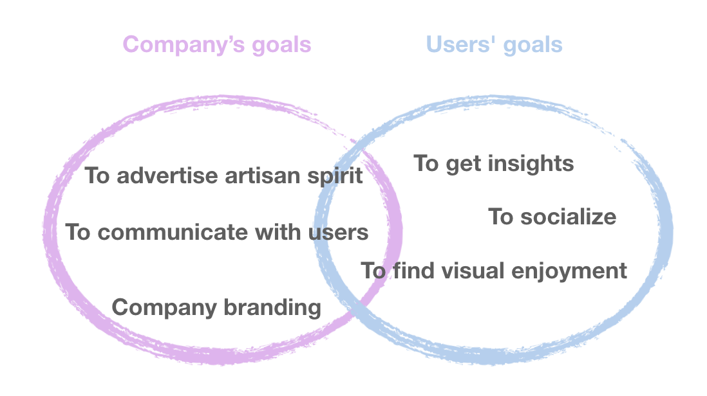

Youqi
An experimental mobile app that conveys ideas and connect people.

The vision - bring the like-minded together
The advent of technological era pushed human beings onto the fast rail of flashy modern life, where they get distracted, anxious, and lost in life itself.The situation triggered tag UX Design’s vision for a minimal, humble, but persistent app, where people slow down to breathe and perceive.
The vision is beautiful. However, the project was a mess when I joined: my coworkers overthrew high fidelity prototypes repeatedly and debated endlessly. To end this tedious situation, I helped to determine our product concepts and kept the whole team on the same page during meetings. I was also responsible for building the imbedded storyline, designing interfaces and typography.
in February, 2018, Youqi was released to App store. After releasing, it got featured in Today Tab and App Tab in App store several times.
Keep the whole team on the same page
Comparing products, synthesizing ideas, defining goals
As we are not clear about the product, I researched two kinds of apps that share similar vision, trying to explore the potential functionalities, basic layouts and marketing strategies of our product through these competitors. Also, I researched market’s feedback to those apps to get insights on how to measure our product’s success.
Key findings include
- Multitasking is a curse for apps
One kind of apps I researched is online merchandise with an emphasize on content and community. These apps hope to tell a good story, while sell products at the same time. However, the greedy decision to include more results in mess.
- Building community can be tricky
Building a community seems a simple decision, but it needs more than usable functions and beautiful interfaces. Operation on a long run is key to an app community.
- At least one aspect must thrive
The apps should have one characteristic that makes them stand out， either it is an interesting column or a daily video. An app has to distinguish itself from others by one key feature.
Our team had diverse expectations of the product. I helped to categorize and synthesize those ideas through mind map.
To understand what aspects should we address in this product, I summarized what we expect from this app and what users potentially expect from a product like it. And I located the overlapping visions.

Experimental design decisions
The research above clarified our goal: we do not expect users to spend much time in this product but we do hope them open it everyday, engage in comment and share it with friends. With it in mind, we landed on the following design decisions.
The experimental design decisions include:
One sparkle a day
Every day, users will only see one insight, either in forms of a quote, a video, a song or a piece of illustration. They can easily like it to collect this piece, comment, and share.
Hidden storyline, gradient interface
I organized the material to appear on this platform and imbedded a subtle hint so that the content of Youqi forms a consistent storytelling line. The whole story flow will only be visible if you open Youqi every day.
Also, the interfaces change color slightly every day throughout the year indicating the flow of time.
We decided to emphasize the 24 solar terms, 72 traditional phenological signs and 25 traditional Chinese festivals in our content. I was responsible for the 24 solar terms typography and interfaces. The 24 solar terms indicate the transition of seasons with two Chinese characters. I designed all the characters independently to get the best visual combinations - even the same characters are slightly different from one to the other.
Every pixel matters
As a product not focusing on real world problems, we decided to produce great visual effect to attract users and make them stay.
We followed Material design standard, applied measurements align to an 8dp grid, which aligns both spacing and the overall layout.
We also set up our design guidelines for fonts, created a set of icons.
We created illustrations and hid them in the interface to surprise users, boost sharing and bring playful delight.
Gains and pains
How to facilitate design decisions among a team
How to measure a product’s success
Daily Active Users and Retention Ratio
Brand analysis